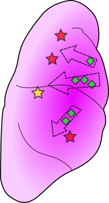
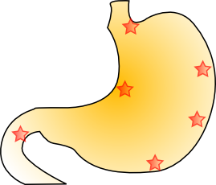

外科: CR-S01Surgery: CR-S01
- 現在書きかけにつき、記述内容やデータが正しくない場合があります。
- TIPS
-
縫合の判定
基本的に、ガイド通りにやると時間がかかる上にGOODが出やすい。
旧作シリーズ通りならば、折り返しの回数・折り返しの幅・傷と角度、この3点の総合評価で判定されている。
自分の感覚では、ガイドよりも短く、折り返しを1回ぐらい多めにすると大体COOLが取れている。多少は縫合角度が斜めになっても問題無いようだ。
心細動中に処置する
心細動中は器具を使用してもミス判定になるが、実際は一瞬だけ効果が現れている。例えばステージ4の鉄骨は、心細動中でもメスで切ることが可能だ。
針金を抜く際の注意
抜く場合は針金の先端を傷口から完全に離すこと。こうしないとまだ抜かれていない状態のままになってミスが発生してしまう。

- 2凍える刻の中で/Frozen in Time
-
Special Bonus
条件 Intern Resident Specialist MISS判定@回以下 8 3 0 COOL判定@回以上 3 5 7 手術時間@秒以内 360 240 90 血溜りの再発生@回以内 12 10 6 Operation Rank
ランク Intern Resident Specialist C ～4699 ～6724 ～7899 B 4700～4999 6725～6949 7900～8399 A 5000～5299 6950～7174 8400～8899 S 5300～ 7175～ 8900～8999 XS - - 9000～ XS Time Limit
GOODの数 クリアタイム 0 1分20秒 1 50秒 XS Guide
全COOL必須な上、制限時間がやや厳しい。普通にやっていたら明らかに時間が足りないので、病巣をエコーと手で確認せずに薬品を投与しよう。場所は毎回固定なので、何回か挑戦すれば自然と覚えるはずだ。
最初の病巣はエコーでの探査が必須となり、手で確認するようになった後も中央の病巣は手でのチェックが必須となる。
なお、病巣2個発見後に手で探査するようになる条件は、心臓の上でポインタを動かした量が一定以上になることなので、左右で激しくリモコンを動かそう。すぐにイベントが発生する。
XS Talk
ハンク「ムゥ…感服したよ、こんな医師が存在するとは…」
CR-S01「…俺に出来るのはここまでだ。退院までのケアを頼む」Movie

- 3招かれざる訪問者/Uninvited Guest
-
Special Bonus
条件 Intern Resident Specialist MISS判定@回以下 14 6 0 バイタルを@以下にしない 16 25 45 粘液の処置@個以内 50 40 20 病巣の影が消えた回数@回以内 12 5 1 Operation Rank
ランク Intern Resident Specialist C ～6899 ～9699 ～11149 B 6900～7349 9700～10149 11150～11649 A 7350～7799 10150～10599 11650～12149 S 7800～ 10600～ 12150～12199 XS - - 12200～ XS Time Limit
GOODの数 クリアタイム 0 3分40秒 1 3分10秒 2 2分40秒 3 2分10秒 XS Guide
小腸
まずは炎症の処置。小さい炎症は消炎剤を満タンまで補充することで一気に3つまで処置することができる。
全ての炎症を処置すると術野をルーペで見渡せるようになる。右上と左上にそれぞれ腫瘍が発生しているので、炎症と合わせて処置する。
腫瘍か炎症を合わせて5つ処置すると、初期位置に再び炎症と腫瘍が発生する。全ての処置が完了すると肺に移る。
肺：悪化前
問題は肺に移ってから。まずは小腫瘍をレーザーとゼリーで処置するが、一つだけ残しておく。バイタルを全快したら残りの小腫瘍を処置する。
すると、数カ所に粘液が出現する。場所は毎回固定で、それぞれ上、中央やや右、左下となる。2個以上処置すると中央に腫瘍が出現する。この腫瘍を摘出しないとさらに粘液が発生してしまい時間の無駄になるので、さっさと摘出してしまおう。全て処置すると黒い痣と共に症状が悪化する。
肺：悪化後
初期状態では3箇所に腫瘍が存在し、移動する粘液が約5～6個出現している。全て処置すると最後の腫瘍が出現して処置終了となる。
粘液を放置すると小腫瘍を生み出すだけでなくバイタルの減少を加速させるので、できるだけ処置したいが、ひとつひとつ処置すると時間がかかってしまう。時間経過と共に粘液が復活してしまう。
そして、腫瘍を放置すると粘液が復活してしまう。真っ先に腫瘍を摘出したくなるが、そうすると大量の粘液にバイタルを減らされてしまうだろう。
バイタル45以上をキープしなければならないので、可能な限りダメージが少なくなるように粘液を処置する。

赤い星が腫瘍の位置で、黄色い星は最後に出現する腫瘍の位置を表している。重要なのは緑の菱形。これは粘液の初期位置を表しており、点線の矢印は粘液の大体の移動方向を表している。
悪化直後真っ先に粘液をある程度処置してしまえばバイタルがかなり楽になるし、時間の短縮にも繋がるので、悪化直後に粘液を一気に処置できるように練習しよう。しかる後に腫瘍の摘出を行う。
悪化後は常にバイタルの数値に気をつけよう。45はあっという間だ。
このステージは縫合を1度しか行わないので、腫瘍の場所を覚えて粘液の処理パターンさえ構築できればすぐにXSが取れるだろう。
XS Talk
マリア「…お前、やっぱ凄ぇんだなぁ」
CR-S01「……？理解不能だ、何を言って居る」
マリア「またまた、謙遜しちゃって！いや～、天才ってのは居るモンだ！」Movie

- 4忌まわしき過去/History of Fear
-
Special Bonus
条件 Intern Resident Specialist MISS判定@回以下 13 7 1 COOL判定@回以上 9 13 20 病巣の影が消えた回数@回以内 10 6 3 心停止の発生@回以内 4 4 4 Operation Rank
ランク Intern Resident Specialist C ～7574 ～9499 ～11669 B 7575～8099 9500～10099 11700～12199 A 8100～8624 10100～10699 12200～12699 S 8625～ 10700～ 12700～12849 XS - - 12850～ XS Time Limit
GOODの数 クリアタイム 0 3分40秒 1 3分10秒 2 2分40秒 3 2分10秒 XS Guide
カウンターショックによる蘇生からスタート。中央に刺さる鉄骨は無視して、まずは周囲の患部を処置する。
鉄骨摘出
鉄骨の周囲に発生している血だまりを吸い上げると、一定時間毎に心細動が発生するようになる。初回はかならず痙攣してしまうが、2回目以降はランダムとなる。
鉄骨は周囲の血だまりをドレーンで吸い上げると切れ目を入れることができる。切れ目を入れると再び血だまりが発生するので吸い上げると、ピンセットで鉄骨を引き抜くことができるようになる。
ピンセットは青丸のガイドの中でないと鉄骨を掴めないので注意しよう。
4回鉄骨を引き抜くと完全に摘出することができるが、その後には巨大な裂傷が残るので、抜ききる前にバイタルをなるべく大きくし、さらに裂傷の処置に影響が出ないように心細動が起きるまで待機して、心細動をやり過ごしたら鉄骨を抜いてしまおう。
また、鉄骨を1段階引き抜いた直後から周囲に内出血が発生する。放っておくと破裂してバイタルを大きく減らしてしまうので、鉄骨を抜ききる前に処置してしまおう。
摘出後
鉄骨を摘出すると巨大な傷口が残るので、血溜まりを全て吸い上げてからピンセットで閉じて縫合しよう。縫合のコツは、ひたすら多く縫うようにするとCOOLが出やすい。
縫合してもまだ完全には終わらない。計6ヶ所へ人工膜を乗せてゼリーで定着して初めて処置完了となる。傷口からは血だまりが発生して定着した人工膜をはがしてしまう。発生した血だまりの数で評価も変わってしまうので、できれば一気に定着させてしまいたい。
巨大な裂傷を完全に処置すると出血層と裂傷と出血が発生する。この際にバイタルを大きく減らしてしまう。予めバイタルを回復させておくか、処置と同時にひたすらバイタル注射を打って対抗するかどちらかとなる。
あとは、残った患部の処置となる。巨大裂傷を縫合した時点で右側に2個内出血が発生している。全ての内出血の場所は以下の通りだ。
XS Talk
トモエ「…御見それ致しました。これ程のお手前をお持ちとは…」
トモエ「貴方の様な医師と過ごせた事を、生涯、誇りに思います」
CR-S01「……。大袈裟です…」Movie

- 5悪夢からの目覚め/Waking From Terror
-
Special Bonus
条件 Intern Resident Specialist MISS判定@回以下 10 7 1 手術時間@秒以内 780 580 390 血溜りの再発生@回以内 40 35 10 見付けた縫合針を再度飛ばさない - - - ランク Intern Resident Specialist C ～5625 ～9049 ～12749 B 5926～6599 9050～9799 12750～13249 A 6600～7274 9800～10549 13250～13649 S 7275～ 10550～ 13650～13899 XS - - 13900～ XS Time Limit
GOODの数 クリアタイム 0 6分00秒 1 5分30秒 2 5分00秒 3 4分30秒 4 4分00秒 XS Guide
下垂体
腫瘍の摘出を行う。腫瘍は3回に分けて切り出さなければいけないが、切り出す度に出血してしまう。また、腫瘍からは切り出す時とは別に時間経過で出血してしまう。この出血がある程度発生してしまうと腫瘍を摘出してもCOOL判定じゃなくなってしまうので注意が必要。
血だまりを吸おうとして、全く手をかけていない腫瘍の組織液まで吸ってしまうと血だまりの発生が始まってGODDに繋がるので、腫瘍は1つずつ処理するようにしよう。
合計5個の腫瘍を摘出すると患部を移動する。次の患部は切開から始まるのでバイタルを最大まで回復しよう。
膵臓
血だまりを処理したら穿孔の処置へ。穿孔は放置すると血溜まりを発生させるだけでなく処置完了時の評価が下がるので、出現次第処置したい。
穿孔の周囲をメスで切り取ったらピンセットで口を閉じて縫合する。この縫合でCOOLが非常に出にくい。ガイドよりやや狭くやや多く縫合すると出やすいようだ。
次に炎症を処置する。まずは大炎症を処置する。次に小炎症だが、小さい方は消炎剤を満タンまで注射器に補充すると、一度に3つまで処置することができる。炎症を処置すると新たに小腫瘍が6個出現するのでレーザーで焼いてゼリーで処置しよう。処置が完了するとルーペで患部を見渡すことができるよういなる
患部上のほうへ移動していくと、炎症と小腫瘍が存在するので処置していく。上端近くに腫瘍が隠されているので、バイタルを最大まで回復してから摘出しよう。摘出すると、膵臓全体に患部が大量に発生する。
まずは中央付近に腫瘍が新たに2個発生しているので、小腫瘍と共に処置する。
さらに下のほうには再び穿孔が出現している。腫瘍の処置に手間取るようなら、先にこちらを処置したほうが評価を落とさずに済むだろう。この穿孔を処置するとさらに炎症と小腫瘍が発生する。
全て処置すると胃へ移るので、最後に適当な患部を1個だけ残してバイタルを全快にしよう。
胃
まずは血だまりを4つ吸い上げると、胃の上部・右下・左下に腫瘍が出現する。この中から一つでも腫瘍を摘出すると胃の下部に穿孔が出現し、さらに出血も発生する。評価を落とさない為にも真っ先に穿孔を処置しよう。
腫瘍と穿孔を全て処置すると、さらに上部に穿孔が出現する。ピンセットで口を閉じると縫合針が飛んでしまう。針は6ヶ所へランダムに飛ぶので、エコーで探索し、すぐにピンセットで回収して縫合しよう。

星が縫合針の飛ぶ位置となる。かならず血溜まりの下にあるので、エコーで探索して音が変わったら回収しよう。
後は残った血だまりと出血を処置して手術終了となる。
XS Talk
ゲイブ「あ～あ、これでお前に借り1つだなぁ…」
CR-S01「……。いや…俺の方こそ…」
ゲイブ「バ～カ、前向いて生きんだよ。暗い顔してんじゃねぇぞ、青年！」Movie

- 6決意の刃/Blade of Resolve
-
Special Bonus
条件 Intern Resident Specialist MISS判定@回以下 8 5 1 バイタルを@以下にしない 11 20 30 熱傷の悪化@回以下 4 2 1 剥がれた人工膜@枚以内 6 3 1 Operation Rank
ランク Intern Resident Specialist C ～8099 ～9999 ～11149 B 8100～8549 10000～10449 11150～11649 A 8550～8999 10450～11899 11650～12149 S 9000～ 11990～ 12150～12299 XS - - 12300～ XS Time Limit
GOODの数 クリアタイム 0 1分20秒 XS Guide
スコア条件が外科手術の中で最も厳しい。全COOLを出した上に1分20秒以内にクリアしないといけない。しかも、バイタルを常に30以上に保たなければならない。
胸部
まず真っ先に熱傷へ人工膜を乗せてゼリーで定着。可能なら事前にガラス片を抜いても良い。
定着したらバイタル注射を一本打ってから裂傷を全て縫合。次に炭化熱傷を処置するが、人工膜を載せるところまで行ったらゼリーで定着せずにバイタルを全快まで回復する。そして、針金を抜いて人工膜とまとめて処置しよう。
新たな患部が脚部に発生するのでルーペで左へ移動する。
脚部
真っ先に左足の針金を抜いて熱傷を処置しよう。そうしないとすぐに熱傷が炭化してしまう。
次に右足の熱傷を処置しよう。このあたりでバイタルがピンチになるので回復しておく。最後に右上のガラス片だけ残しておいて、バイタルを60まで回復。それ以上は無駄になる。
胸部
最後の患部を処置する。人工膜4枚→ヒールゼリー→内出血にメス→縫合の手順で行う。
全て処置すると最後にカウンターショック。このカウンターショックはゲージを緑で止める必要が無いので、リモコンを押し出したらボタン連打して良い。
XS Talk
CR-S01「手元が見えない！電圧、まだかっ…！」
トモエ「バイタル、低下して居ます！心拍復帰しませんっ！」
CR-S01「クソッ…間に合え！間に合ってくれっ！」Movie

- 7覚醒する神の手/Waking Heart
-
Special Bonus
条件 Intern Resident Specialist MISS判定@回以下 10 6 2 バイタルを@以下にしない 11 20 25 剥がれた人工膜@枚以内 12 10 4 閉じた傷の再解放@回以内 5 3 0 Operation Rank
ランク Intern Resident Specialist C ～10124 ～14049 ～17549 B 10125～11099 14050～15099 17550～18049 A 11100～12074 15100～16149 18050～18549 S 12075～ 16150～ 18550～18699 XS - - 18700～ XS Time Limit
GOODの数 クリアタイム 0 5分00秒 1 4分30秒 2 4分00秒 3 3分30秒 XS Guide
Y字裂傷のコツ
Y字裂傷は3方向へ1本ずつ裂傷が伸びている。裂傷はまずピンセットで閉じなければいけない。厄介なのは、閉じた際にY字裂傷上の血溜まりの数が一定になるように血溜まりを再発生させてくる。そのため、次に縫うためにも血溜まりを吸い上げなければならない。
この裂傷を早く処置するには、閉じた時に発生した血溜まりを狙って吸うことが必要になる。
発生した血溜まりが裂傷の上に乗って縫合できないのだ。そして、無駄に吸い過ぎると、次の裂傷を閉じた際に余計に再発生してしまう。なので、血溜まりを吸い上げる量は常に最小限に抑えるのが好ましい。
全て縫合まで行ってしまえばそう簡単には再発生しないので、血溜まりを全て吸い上げて人工膜を載せてゼリーで定着しよう。
肺
まず、安全に行くなら骨の回収は後回しでよい。まずは患部の処置を行う。
Y字裂傷を処置すると左右それぞれ一つずつ内出血が発生し、左肺の上部に出血層、その他数ヵ所に出血が発生する。そうなるとバイタルの減りも大きくなってしまうので、最後にゼリーで定着させる前にバイタルを全快させてから定着させよう。
次に内出血が破裂しないうちに処置して、そのままもう片方のY字裂傷へ。内出血を処置してからバイタルに注意しつつ慎重に処置する。
全ての患部の処置が終わったら骨の回収へ。旧シリーズと違って今回は出現順がランダムなので、回収順は適当で構わない。
肋骨パズル
ピースの出現がランダムなので最も時間がかかる場所だが、逆に言えば最も短縮が期待できる場所である。ここを短時間で処置できるようになればスコア的にかなり余裕になるだろう。
なお、次の肝臓に移る際にバイタルが45以上の場合は45まで減らされるので、無駄に回復しないように。
肝臓
左右にY字裂傷、左のY字のすぐ上に内出血、左のY字のすぐ右に裂傷が2つ存在する。
操作可能になると、すぐに心細動の予兆が来るので、真っ先に裂傷2本を縫合したらバイタルを回復して心細動に備えよう。
次に内出血を処置して、どちらか片方のY字裂傷を処置しよう。この間バイタルの減りはかなり早いので気をつけること。
Y字裂傷を処置すると左上に出血層、数ヵ所に出血が発生する。
全て処置するとカウンターショック3連発の強制イベント後、閉創となる。
XS Talk
トモエ「まだ、夢を見て居る様です…これが…神医と呼ばれる方の力…」
CR-S01「…いいえ、違います。救われたのは…俺の方だ」
トモエ「先生の事は忘れません。最後まで…有り難う」Movie

- » 救急: マリア・トレス